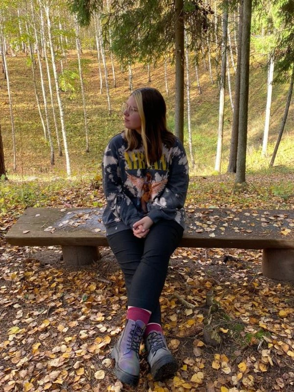
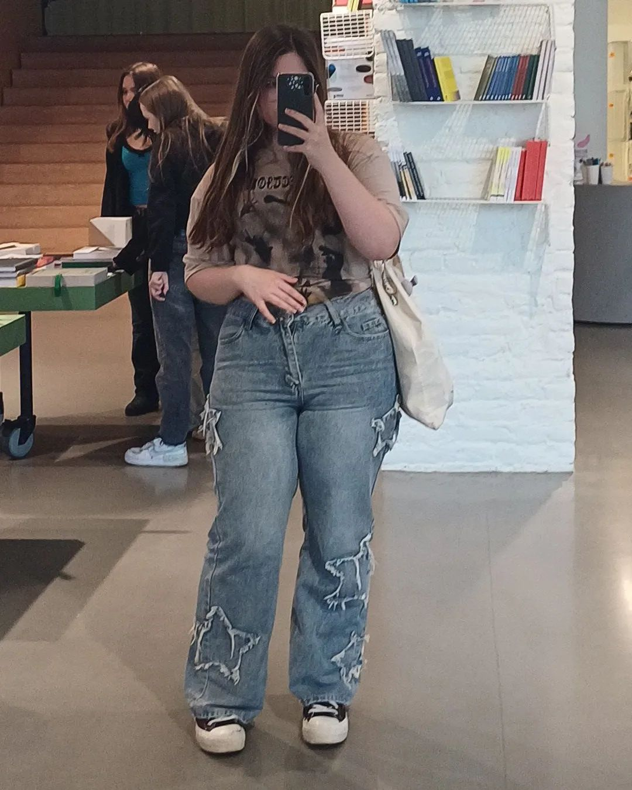
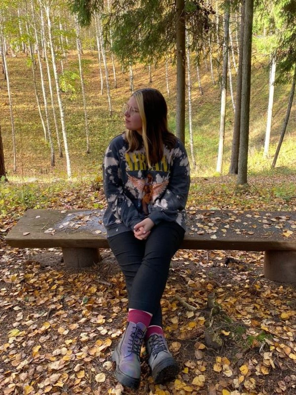
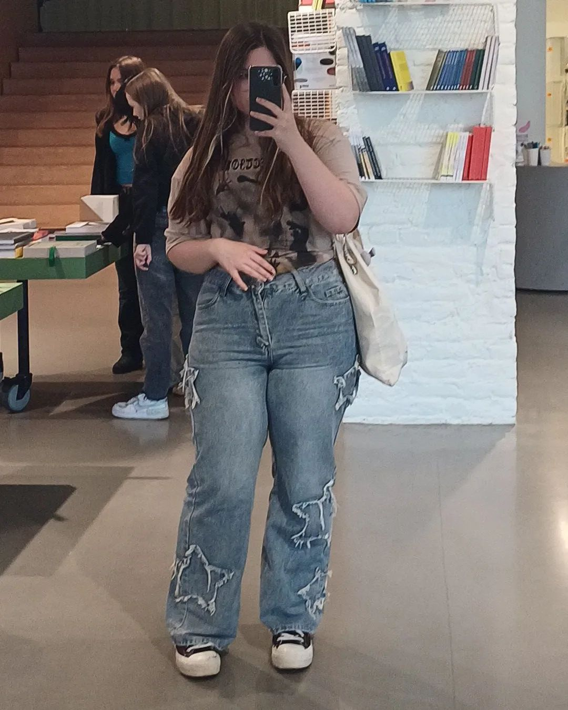
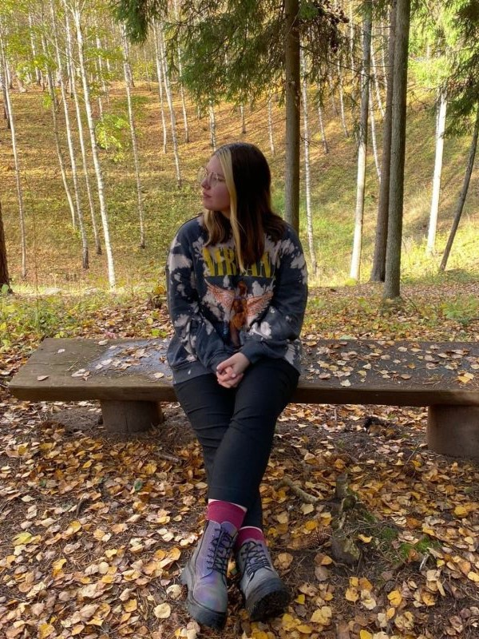
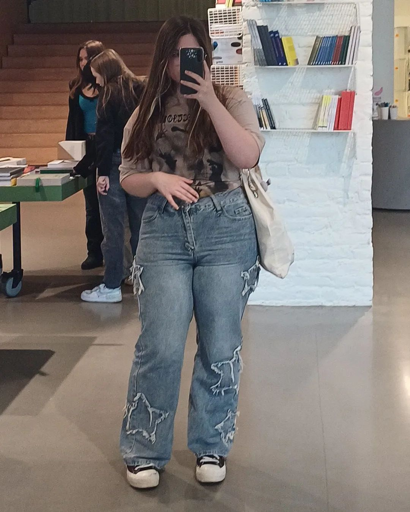

Hello!
Thank you for visiting my site and wanting to learn more about me! I am a thriving environmental designer with a passion for nature and everything around it!
 



Thank you for visiting my site and wanting to learn more about me! I am a thriving environmental designer with a passion for nature and everything around it!


The very start of my education journey. Started going to Ādažu vidusskola.
Finished Ādažu vidusskola and started to look for my future in environmental design.
Started my journey as an environmental design student at Ogres Tehnikums.
Started working at a small business that made beautiful invitation cards with nature aspects.
I am a young, motivated and inspired student, but sometimes the world can get to me in many different ways. Even though sometimes the world looks bleak and gray, I try to be positive and bright!
There are many things that help me get through my hardships,
these are a few things that really help me calm down in though times. Some people would say that these things are "basic" and "don't really help you", but i say that they are just pessimistic and are trying to pull me down into the slumps with them.
Ain't he a cutie?